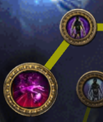
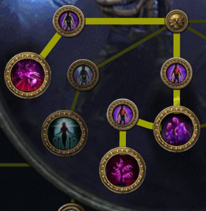
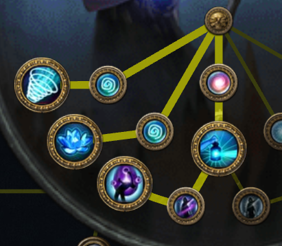

Roadmap
полезные заметки
-
1-6 уровень
После убийства Хилока - Волна холода
По возможности докупаем - Поднятие зомби
После Прибрежного острова- Ртутный флакон
После входа в Сырой проход соединяем :
Призыв неистового духа
Призыв Фантома
Тотем священного огня
Докупаем у Нессы - Стена пламени
-
7-14 уровень
После Тюремщика - Урон приспешников - Живучесть
Как вошли в пещеру злобы - Отпущение - Урон приспешников
основнаяОтпущение
Черепки
Урон приспешников
Призыв Фантома
Призыв неистового духа
Прочее
Урон приспешников
Огненный рывок
Поднятие зомби
-
Начало 2го акта
Связки должны быть такие :
Отпущение
----------
Урон приспешников
Призыв Фантома
Призыв неистового духа
Без связок :
Урон приспешников
Раскатистый удар
Живучесть Поднятие зомби Огненный рывок -
16-22
После обители грехов ур.2 Покупаем у Йины - Вестник чистоты
После пещеры пауков Покупаем у Йины - Призы механоботов
Берем в награду - Ускоренное сотворение чар и меняем на Призыв Фантома
Помогаем Алире -
Акт - 3
После получение 4-х линка 3 синих + 1 красное
Отпущение
Связка №2 :
Урон приспешников
Ускоренное сотворение чар
Голодное остервенение
Раскатистый удар
В конце акта необходимо пройти лабиринт, выбрать восхождение - Некромант и взять эти перки : 
Урон приспешников
Призыв неистового духа
Высвобождение
-
Лабиринт №1
- Акт 1 - Тюремное подземелье
- Акт 2 - Склеп
- Акт 2 - Обитель грехов
- Акт 3 - Крематорий
- Акт 3 - Катакомбы
- Акт 3 - Имперские сады
-
Акт - 6
В начале акта, необходимо проверить сопротивления, если есть просадки, докрафтить на станке в убежище / Поменять кольца
Ставим в слот и призываем призраков Морозный авторазведчикСотворение призрака
В последующих лабиринтах берем такие таланты 
Эхо магии
Пронзание
Дополнительные снаряды
-
Лабиринт №2
- Акт 6 - Тюрьма
- Акт 7 - Склеп
- Акт 7 - Обитель грехов - уровень 2
-
Лабиринт №3
- Акт 8 - Купальни
- Акт 9 - Тоннель
- Акт 10 - Костница
-
До респека
Основная связка
Отпущение
Урон приспешников
Ускоренное сотворение чар
Голодное остервенение
Эхо магииДля жирных
Призыв неистового духа
Урон приспешников
Высвобождение
Раскатистый удар
Призраки
Сотворение призрака
Эхо магии
Залп
Пронзание
Зомби+Голем
Поднятие зомби
Здоровье приспешников
Урон приспешников
Призыв трупного голема
Можно без связи - Ауры
Призыв механоботов
Вестник чистоты
Живучесть
Перемещение
Огненный рывок
Ускоренное сотворение чар
-
Начальная сборка
Переход к начальной сборке : Покупаем
- Клык аракали
- Милосердие виктарио
- Древний череп
Меняем восхождение с Некромант на Окультист

Сделать это можно пройдя 1-й лабиринт до конца, предварительно сбросив все пассивки Некроманта и в конце выбрать класс восхождения заново
Выставляем камни как в блоке предметов.